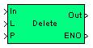

| MBDS Environment |
|
String Delete |
MATLAB Helpdesk |
General
Delete a substring of the input string.
Library
DescriptionMBDS Blockset

With this block a specified substring of a string signal connected to the input In can be deleted. The substring is specified by the position of the first character provided by input P and the number of characters specified by input L. The first character of the entire string signal is determined by position 1.
The block has an ENO (Error Number Output) output port to indicate an error. The ENO output is set to false in case of an error, otherwise it is set to true. The ENO output port can be hidden/shown via the parameter Show ENO port in the block mask.
For special values of L and/or P the block behaves as follows:
- If P is zero or negative the specified position is invalid and hence the ENO output is set to false.
- If L is zero the ENO output is set to true. The output string Out is identical to the input signal In.
- If L is negative then P = P + L and L = L * -1 holds. The ENO output holds true.
Inputs
and
Outputs
Example
Port I/O Data Type Description In
In
uint8 (N) String to be modified P
In Any integer Position of the substring within input string In L In Any integer Number of characters of the substring Out Out uint8 (N) Resulting output string ENO Out boolean ENO is false if an error has been occurred. If the block has been processed correctly the ENO Output is set to true
To illustrate the behavior of the block some examples shall be discussed. Suppose the string 'abcdefg' is connected to input In.
Example 1:
- L = 3 : 3 characters are deleted.
- P = 3 : The characters are deleted from positions 3 ('c') to 5 ('e').
- Result: 'abfg'
Example 2:
- L = 6 : 6 characters are to be deleted.
- P = -3 : The negative input defines a position left of string (see above): characters are deleted from positions -3 to 2.
- Result: 'cdefg'
- Detailed explanation: Positions -3 to 0 are not within the valid range. Only the characters in the valid positions 1 and 2 are deleted ('ab').
Example 3:
- L = -3
- P = 5
- As L is negative, the start position is calculated according to the above formula as follows:
- P = 5 + (-3) = 2
- L = -3 * -1 = 3
- This means 3 characters are deleted, beginning at position 2.
- Result: 'aefg'
Example 4:
- L = -3
- P = 2
- As L is negative, the start position is calculated according to the above formula as follows:
- P = 2 + (-3) = -1
- L = -3 * -1 = 3
- This means: 3 characters are to be deleted, beginning at position -1.
- Result: 'bcdefg'
- Detailed explanation: Positions -1 to 0 are not within the valid range. Only the character in the valid position 1 is deleted ('a').
For more information refer to the example.